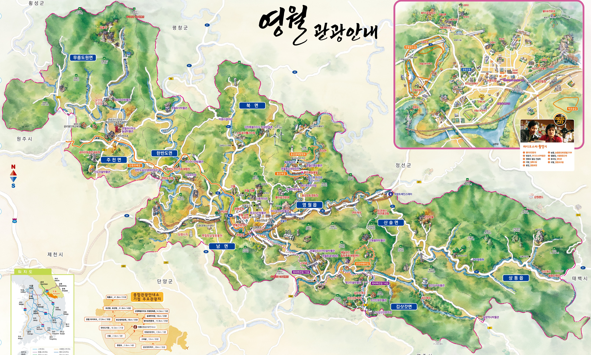

추천
느린 숲길 산책 코스
낮의 햇빛과 조용한 걸음을 통해 생체리듬을 정돈하고, 과한 각성을 낮추는 자연 체류형 코스입니다.
영월의 고요한 밤을 따라, 수면을 위한 여행을 시작해보세요.
원하는 로그인 방식으로 시작하거나, 지금은 비로그인으로 먼저 둘러볼 수도 있어요.
수면에 도움이 되는 영월의 관광 자원을 따라 이동하고, 방문한 장소를 별처럼 모아 개인별 회복 별자리를 만드는 홈 화면 프로토타입입니다.
숙소에 도착하기 전, 몸과 마음의 각성을 천천히 낮춰주는 영월의 회복 자원을 별로 표시했습니다.

수면에 도움이 되는 시간대와 감각 자극 수준에 맞춰, 영월의 회복 장소를 추천합니다.
낮의 햇빛과 조용한 걸음을 통해 생체리듬을 정돈하고, 과한 각성을 낮추는 자연 체류형 코스입니다.
해질 무렵부터 별마로천문대 방향으로 이어지는 조용한 동선으로, 밤의 감각 전환을 돕는 코스입니다.
시야가 트인 강변에서 머무르며 호흡을 정리하고, 숙소 도착 전 몸의 긴장을 풀어주는 정적 체류형 장소입니다.
여행 성향 · 수면 습관 · 환경 민감도를 차례대로 체크하면, 홈에서 맞춤 회복 코스를 보여드립니다.
진단을 완료하면 나의 수면 성향과 환경 민감도에 맞춘 1박 2일 회복 타임라인이 이곳에 생성됩니다.
아직 분석된 회복 프로파일이 없습니다.
진단 탭에서 3가지 설문을 먼저 완료해 주세요.
스마트링 센서 데이터와 낮의 관광 동선이 결합되어, 나에게 가장 잘 맞는 치유 프로파일을 완성합니다.
아직 기록된 수면 데이터가 없습니다.
영월의 숙소를 방문하여 첫 번째 별자리를 완성해 보세요.
비로그인 상태에서는 일부 정보만 둘러볼 수 있고, 나중에 로그인하면 기록 저장 기능을 이어갈 수 있습니다.
비로그인 체험 모드로 진입해 있어요. 소셜 로그인을 연결하면 별자리 기록과 개인 추천을 저장할 수 있습니다.
저자극 동선, 자연 체류, 별 보기, 숙소 전 감각 전환 루틴을 우선 추천하는 방향으로 설정되어 있습니다.
영월의 밤을 따라 5개의 회복 별을 모두 모으셨네요.
당신만을 위한 숙면 선물이 도착했습니다.